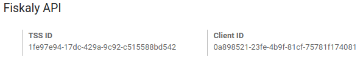

Germany¶
German Chart of Accounts¶
The chart of accounts SKR03 and SKR04 are both supported in Odoo. You can choose the one you want by going in then choose the package you want in the Fiscal Localization section.
Be careful, you can only change the accounting package as long as you have not created any accounting entry.
Tip
When you create a new Odoo Online database, the SKR03 is installed by default.
German Accounting Reports¶
Here is the list of German-specific reports available on Odoo Enterprise:
Balance Sheet
Profit & Loss
Tax Report (Umsatzsteuervoranmeldung)
Partner VAT Intra
Export from Odoo to Datev¶
It is possible to export your accounting entries from Odoo to Datev. To be able to use this feature, the german accounting localization needs to be installed on your Odoo Enterprise database. Then you can go in then click on the Export Datev (csv) button.
Point of Sale in Germany: Technical Security System¶
The Kassensicherungsverordnung (The Act on Protection against Manipulation of Digital Records) requires that electronic record-keeping systems - including the point of sale systems - must be equipped with a Technical Security System (also called TSS or TSE).
Odoo offers a service that is compliant with the help of fiskaly, a cloud-based solution.
Important
Since this solution is cloud-based, a working internet connection is required.
Note
The only VAT rates allowed are given by fiskaly. You can check these rates by consulting: fiskaly DSFinV-K API: VAT Definition.
Configuration¶
Modules installation¶
If your database was created before June 2021, upgrade your Point of Sale app (
point_of_sale) and the Restaurant module (pos_restaurant).Install the Germany - Certification for Point of Sale (
l10n_de_pos_cert) and Germany - Certification for Point of Sale of type restaurant (l10n_de_pos_res_cert) modules.Tip
If these modules are not listed, update the app list.

Register your company at the financial authority¶
To register your company, go to , fill out the following fields and Save.
Company name
Valid address
VAT number
St.-Nr (Steuernummer): this number is assigned by the tax office to every taxable natural or legal person. (e.g.,
2893081508152)W-IdNr (Wirtschafts-Identifikationsnummer): this number is used as a permanent identification number for economically active persons.
You can then register your company through fiskaly by opening the fiskaly tab and clicking on the fiskaly Registration button.

Tip
If you do not see the fiskaly Registration button, make sure that you saved your company details and are not in editing mode anymore.
Once the registration has been finalized, new fields appear:
fiskaly organization ID refers to the ID of your company at the fiskaly side.
fiskaly API key and secret are the credentials the system uses to access the services offered by fiskaly.

Note
It is possible to request new credentials if there is any issue with the current ones.
Create and link a Technical Security System to your PoS¶

To use your point of sale in Germany, you first have to create a TSS for it.
To do so, go to , open the point of sale you want to edit, then check the box next to Create TSS and Save.
Once the creation of the TSS is successful, you can find your TSS ID and Client ID under the fiskaly API section.
TSS ID refers to the ID of your TSS at fiskaly’s side.
Client ID refers to your PoS but at fiskaly’s side.
DSFinV-K¶

Whenever you close a PoS session, the orders’ details are sent to the DSFinV-K service of fiskaly.
In case of an audit, you can export the data sent to DSFinV-K by going to .
These fields are mandatory:
Name
Start Datetime (export data with dates larger than or equal to the given start date)
End Datetime (export data with dates smaller than or equal to the given end date)
Leave the Point of Sale field blank if you want to export the data of all your points of sale. Specify a Point of Sale if you want to export this specific PoS’ data only.
The creation of a DSFinV-K export triggers on export at fiskaly’s side.

As you can see, the State is Pending. This means that the export has been successfully triggered and is being processed. You have to click on Refresh State to check if it is ready.
German Tax Accounting Standards: Odoo’s guide to GoBD Compliance¶
GoBD stands for Grundsätze zur ordnungsmäßigen Führung und Aufbewahrung von Büchern, Aufzeichnungen und Unterlagen in elektronischer Form sowie zum Datenzugriff. In short, it is a guideline for the proper management and storage of books, records, and documents in electronic form, as well as for data access, that is relevant for the German tax authority, tax declaration, and balance sheet.
These principles have been written and published by the Federal Ministry of Finance (BMF) in November 2014. Since January 2015, they have become the norm and replace previously accepted practices linked to computer-based accounting. Several changes have been made by the BMF in 2019 and January 2020 to specify some of the content and due to the development of digital solutions (cloud hosting, paperless companies, etc.).
Important
Odoo gives you the means to be compliant with GoBD.
What do you need to know about GoBD when relying on accounting software?¶
Note
If you can, the best way to understand GoBD is to Read the Official GoBD text. It is a bit long but quite readable for non-experts. But in short, here is what to expect:
The GoBD is binding for companies that have to present accounts, which includes SMEs, freelancers, and entrepreneurs, to the financial authorities. As such, the taxpayer himself is the sole responsible for the complete and exhaustive keeping of fiscal-relevant data (above-mentioned financial and related data).
Apart from software requirements, the user is required to ensure Internal control systems (in accordance with sec. 146 of the Fiscal Code):
Access rights control;
Segregation of Duties, Functional separating;
Entry controls (error notifications, plausibility checks);
Reconciliation checks at data entry;
Processing controls;
Measures to prevent intentional or unintentional manipulation of software, data, or documents.
The user must distribute tasks within its organization to the relevant positions (control) and verify that the tasks are properly and completely performed (supervision). The result of these controls must be recorded (documentation), and should errors be found during these controls, appropriate measures to correct the situation should be put into place (prevention).
What about data security?¶
The taxpayer must secure the system against any data loss due to deletion, removal, or theft of any data. If the entries are not sufficiently secured, the bookkeeping will be regarded as not in accordance with the GoBD guidelines.
Once bookings have been finally posted, they can no longer be changed or deleted via the application.
If Odoo is used in the cloud, regular backups are part of the Odoo Online service. In addition, regular backups can be downloaded and backed up on external systems.
If the server is operated locally, it is the responsibility of the user to create the necessary backup infrastructure.
Important
In some cases, data has to be kept for ten years or more, so always have backups saved. It is even more important if you decide to change software provider.
Responsibility of the software editor¶
Considering GoBD only applies between the taxpayer and the financial authority, the software editor can by no means be held responsible for the accurate and compliant documentation of financial transactional data of their users. It can merely provide the necessary tools for the user to respect the software related guidelines described in the GoBD.
How can Odoo help you achieve Compliance?¶
The key words, when it comes to GoBD, are: traceable, verifiable, true, clear, and continuous. In short, you need to have audit-proof archiving in place and Odoo provides you with the means to achieve all of these objectives:
- Traceability and verifiabilityEach record in Odoo is stamped with the creator of the document, the creation date, the modification date, and who modified it. In addition, relevant fields are tracked thus it can be seen which value was changed by whom in the chatter of the relevant object.
- CompletenessAll financial data must be recorded in the system, and there can be no gaps. Odoo ensures that there is no gap in the numbering of the financial transactions. It is the responsibility of the user to encode all financial data in the system. As most financial data in Odoo is generated automatically, it remains the responsibility of the user to encode all vendor bills and miscellaneous operations completely.
- AccuracyOdoo ensures with the correct configuration that the correct accounts are used. In addition, the control mechanisms between purchase orders and sales orders and their respective invoices reflect the business reality. It is the responsibility of the user to scan and attach the paper-based vendor bill to the respective record in Odoo. Odoo Document helps you automate this task.
- Timely booking and record-keepingAs most financial data in Odoo is generated by the transactional objects (for example, the invoice is booked at confirmation), Odoo ensures out-of-the-box timely record-keeping. It is the responsibility of the user to encode all incoming vendor bills in a timely manner, as well as the miscellaneous operations.
- OrderFinancial data stored in Odoo is per definition ordered and can be reordered according to most fields present in the model. A specific ordering is not enforced by the GoBD, but the system must ensure that a given financial transaction can be quickly found by a third-party expert. Odoo ensures this out-of-the-box.
- InalterabilityWith the German Odoo localization, Odoo is in standard configured in such a way that the inalterability clause can be adhered to without any further customization.
Do you need a GoBD-Export?¶
In the case of fiscal control, the fiscal authority can request three levels of access to the accounting system (Z1, Z2, Z3). These levels vary from direct access to the interface to the handover of the financial data on a storage device.
In case of a handover of the financial data on a storage device, the format is not enforced by the GoBD. It can be, for example, in XLS, CSV, XML, Lotus 123, SAP-format, AS/400-format, or else. Odoo supports the CSV and XLS-export of financial data out-of-the-box. The GoBD recommends the export in a specific XML-based GoBD-format (see “Ergänzende Informationen zur Datenntträgerüberlassung” §3) but it is not binding.
What is the role and meaning of the compliance certification?¶
The GoBD clearly states that due to the nature of a state of the art accounting software, their configuration possibilities, changing nature, and various forms of use, no legally binding certification can be given, nor can the software be made liable towards a public authority. Third-party certificates can indeed have an informative value for customers to make software buying decisions but are by no means legally binding or of any other legal value (A. 12, § 181).
A GoBD certificate states nothing more than that if you use the software according to its guidelines, the software will not refrain you from respecting the GoBD. These certifications are very expensive in terms of time and cost, and their value is very relative. Thus we focus our efforts on ensuring GoBD compliance rather than pay for a marketing tool which does not, however, offer our customer any legal certainty.
Important
The BMF actually states the following in the Official GoBD text:
180. Positive attestations on the correctness of the bookkeeping - and thus on the correctness of IT-based bookkeeping systems - are not issued either in the context of a tax field audit or in the context of binding information.
181. “Certificates” or “attestations” from third parties can serve as a decision criterion for the company when selecting a software product, but develop from the in margin no. 179 is not binding on the tax authorities.
Note
The previous content was automatically translated from German with Google Translate.
What happens if you are not compliant?¶
In the event of an infringement, you can expect a fine but also a court order demanding the implementation of specific measures.